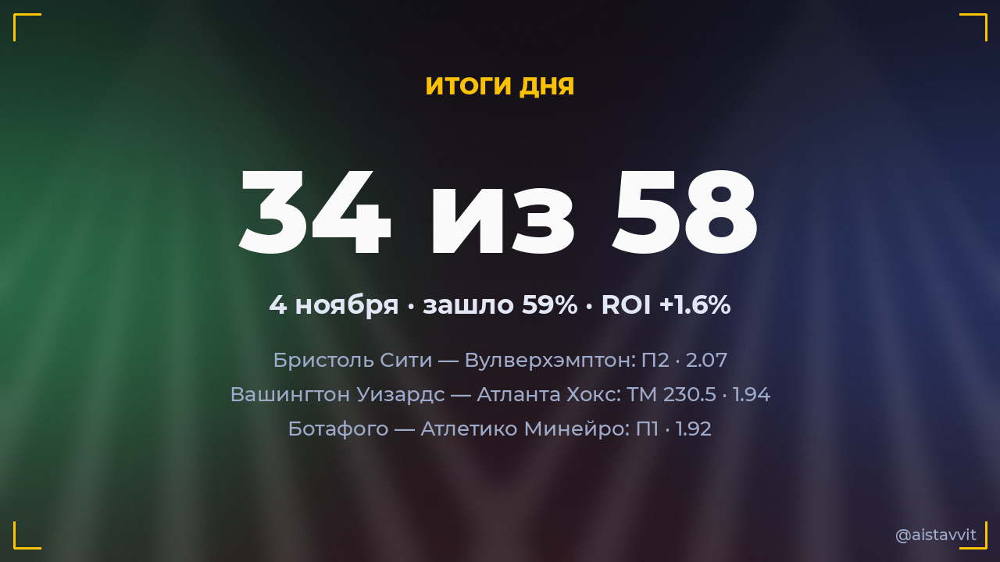

Итоги дня — 4 ноября 2026
Зашло 34 из 58 основных прогнозов (59%), ROI дня +1.6%. Каждый прогноз учтён — и заходы, и промахи.

Все прогнозы дня
🎾 Антония Ружич — Алина Чараева
Будет 2 сета · 1.672:0 ✅
Будет 2 сета · 1.672:0 ✅
⚽ Сан-Паулу — Коринтианс Паранаэнсе
ТМ 2.5 · 1.610:0 ✅
ТМ 2.5 · 1.610:0 ✅
⚽ АЕК — Реал Мадрид
ТБ 3.5 · 1.772:3 ✅
ТБ 3.5 · 1.772:3 ✅
🎾 Алекс Микельсен — Карлос Алькарас
Будет 2 сета · 1.560:2 ✅
Будет 2 сета · 1.560:2 ✅
🎾 Лейре Ромеро Гормас — Солана Сьерра
Будет 2 сета · 1.662:0 ✅
Будет 2 сета · 1.662:0 ✅
🎾 Клер Лю — Кэти Боултер
Будет 2 сета · 1.842:0 ✅
Будет 2 сета · 1.842:0 ✅
🏀 Бостон Селтикс — Милуоки Бакс
ТМ 222.5 · 1.89109:102 ✅
ТМ 222.5 · 1.89109:102 ✅
⚽ Бристоль Сити — Вулверхэмптон
П2 · 2.071:2 ✅
П2 · 2.071:2 ✅
⚽ Ланс — Комо
П2 · 1.911:9 ✅
П2 · 1.911:9 ✅
⚽ РБ Лейпциг — Манчестер Сити
П2 · 1.532:3 ✅
П2 · 1.532:3 ✅
🎾 Маттео Берреттини — Юго Юмбер
Будет 2 сета · 1.842:0 ✅
Будет 2 сета · 1.842:0 ✅
⚽ Славия — Арсенал
ТБ 2.5 · 1.711:2 ✅
ТБ 2.5 · 1.711:2 ✅
⚽ Викинг — Сабах
П1 · 1.504:1 ✅
П1 · 1.504:1 ✅
⚽ Боруссия Д — Бетис
П1 · 1.652:1 ✅
П1 · 1.652:1 ✅
🎾 Деспина Папамихаил — Рената Сарасуа
Будет 2 сета · 1.830:2 ✅
Будет 2 сета · 1.830:2 ✅
🎾 Хасмин Ортенси — Бьянка Андрееску
Будет 2 сета · 1.570:2 ✅
Будет 2 сета · 1.570:2 ✅
⚽ Атлетико Паранаэнсе — Васко да Гама
ТБ 2.5 · 1.751:3 ✅
ТБ 2.5 · 1.751:3 ✅
⚽ Фламенго — Гремио
Ф1 (−1.5) · 1.523:1 ✅
Ф1 (−1.5) · 1.523:1 ✅
🏀 Вашингтон Уизардс — Атланта Хокс
ТМ 230.5 · 1.94105:120 ✅
ТМ 230.5 · 1.94105:120 ✅
🎾 Юлия Грабер — Хулия Риера
Будет 2 сета · 1.740:2 ✅
Будет 2 сета · 1.740:2 ✅
🎾 Алис Тюбелло — Марина Бассольс Рибера
Будет 2 сета · 1.782:0 ✅
Будет 2 сета · 1.782:0 ✅
🎾 Нуну Боржеш — Карен Хачанов
Будет 2 сета · 1.842:0 ✅
Будет 2 сета · 1.842:0 ✅
🎾 Оксана Селехметьева — Полина Кудерметова
Будет 2 сета · 1.850:2 ✅
Будет 2 сета · 1.850:2 ✅
🎾 Маттиа Беллуччи — Артюр Риндеркнеш
Будет 2 сета · 1.850:2 ✅
Будет 2 сета · 1.850:2 ✅
🎾 Томми Пол — Даниэль Мерида
Будет 2 сета · 1.782:0 ✅
Будет 2 сета · 1.782:0 ✅
🎾 Люка Ван Аш — Лёрнер Тьен
Будет 2 сета · 1.742:0 ✅
Будет 2 сета · 1.742:0 ✅
🎾 Александр Зверев — Лоренцо Музетти
Лоренцо Музетти возьмёт хотя бы сет · 1.510:2 ✅
Лоренцо Музетти возьмёт хотя бы сет · 1.510:2 ✅
🎾 Джанис Тьен — Джоанна Гарланд
Будет 2 сета · 1.762:0 ✅
Будет 2 сета · 1.762:0 ✅
🏒 Флорида — Чикаго
ТБ 5.5 · 1.705:3 ✅
ТБ 5.5 · 1.705:3 ✅
🎾 Диана Мартинов — Ясмине Каббаж
Будет 2 сета · 1.860:2 ✅
Будет 2 сета · 1.860:2 ✅
🏀 Оклахома-Сити Тандер — Кливленд
П1 (с ОТ) · 1.62124:116 ✅
П1 (с ОТ) · 1.62124:116 ✅
🎾 Леолия Жанжан — Каролина Алвес
Будет 2 сета · 1.602:0 ✅
Будет 2 сета · 1.602:0 ✅
🎾 Ирен Бурильо — Луисина Гиованнини
Победа: Луисина Гиованнини · 1.530:2 ✅
Победа: Луисина Гиованнини · 1.530:2 ✅
⚽ Ботафого — Атлетико Минейро
П1 · 1.921:0 ✅
П1 · 1.921:0 ✅
🏀 Детройт Пистонс — Филадельфия Сиксерс
П1 (с ОТ) · 1.70106:112 ❌
П1 (с ОТ) · 1.70106:112 ❌
🏀 Нью-Йорк Никс — Чикаго Буллз
ТМ 233.5 · 1.91135:105 ❌
ТМ 233.5 · 1.91135:105 ❌
🏒 Баффало — Оттава
ТБ 6.5 · 1.821:2 ❌
ТБ 6.5 · 1.821:2 ❌
🏀 Нью-Орлеан Пеликанс — Юта Джаз
ТМ 231.5 · 1.89120:113 ❌
ТМ 231.5 · 1.89120:113 ❌
🏀 Хьюстон Рокетс — Миннесота Тимбервулвз
ТМ 218.5 · 1.95107:117 ❌
ТМ 218.5 · 1.95107:117 ❌
🏀 Денвер Наггетс — Торонто Рэпторс
ТМ 231.5 · 1.89128:109 ❌
ТМ 231.5 · 1.89128:109 ❌
🏀 Финикс Санз — Портленд
ТМ 227.5 · 1.93119:132 ❌
ТМ 227.5 · 1.93119:132 ❌
🏀 Мемфис Гриззлис — Индиана Пэйсерс
ТБ 228.5 · 1.89103:107 ❌
ТБ 228.5 · 1.89103:107 ❌
🏀 Бруклин Нетс — Шарлотт Хорнетс
П2 (с ОТ) · 1.59114:104 ❌
П2 (с ОТ) · 1.59114:104 ❌
⚽ Кардифф Сити — Вест Хэм
П2 · 1.983:3 ❌
П2 · 1.983:3 ❌
⚽ ПСВ — Брюгге
П1 · 1.951:2 ❌
П1 · 1.951:2 ❌
⚽ Порту — Наполи
ТМ 2.5 · 1.954:1 ❌
ТМ 2.5 · 1.954:1 ❌
⚽ Рексем — Мидлсбро
П2 · 1.782:0 ❌
П2 · 1.782:0 ❌
⚽ Кортрейк — Мехелен
ТМ 2.5 · 1.961:3 ❌
ТМ 2.5 · 1.961:3 ❌
🎾 Тиаго Агустин Тиранте — Ян-Леннард Штруфф
Будет 2 сета · 1.721:2 ❌
Будет 2 сета · 1.721:2 ❌
⚽ Фенербахче — Ливерпуль
П2 · 1.543:2 ❌
П2 · 1.543:2 ❌
🎾 Лаура Самсон — Кароль Монне
Будет 2 сета · 1.771:2 ❌
Будет 2 сета · 1.771:2 ❌
🎾 Алекс Молчан — Тейлор Фриц
Будет 2 сета · 1.631:2 ❌
Будет 2 сета · 1.631:2 ❌
⚽ Ренн — Олимпиакос
П1 · 2.100:0 ❌
П1 · 2.100:0 ❌
🎾 Майя Джойнт — Мария Саккари
Будет 2 сета · 1.831:2 ❌
Будет 2 сета · 1.831:2 ❌
🎾 Робин Монтгомери — Елине Вандромме
Будет 2 сета · 1.802:1 ❌
Будет 2 сета · 1.802:1 ❌
🎾 Кантен Алис — Франсес Тиафое
Будет 2 сета · 1.702:1 ❌
Будет 2 сета · 1.702:1 ❌
🎾 Талия Гибсон — Александра Саснович
Будет 2 сета · 1.861:2 ❌
Будет 2 сета · 1.861:2 ❌
🏀 Сан-Антонио Сперс — Даллас Маверикс
ТБ 226.5 · 1.87112:111 ❌
ТБ 226.5 · 1.87112:111 ❌
← предыдущий день · следующий день → · статистика бота · прогнозы на сегодня · Telegram-канал